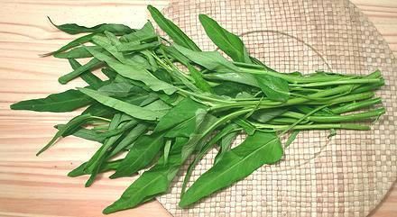
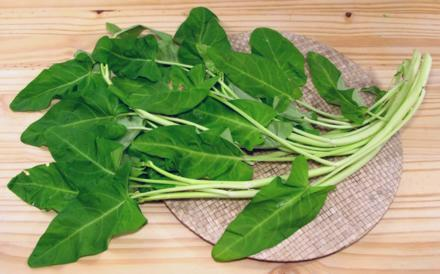
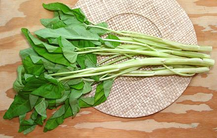
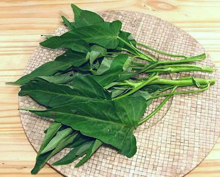

Water Spinach
[Swamp Cabbage;
Ong Choy - variously spelled (Cantonese); Pak Hung, Pak Bung (Thai);
Kang Kong (Malay, Filipino); Kang Kung, Rau Muong (Vietnam);
Gozun Ywet (Burma); Toongsin Tsai (Mandarin); Chinese Watercress,
Water Convolvulus, Water Morning-glory; Ipomoea aquatica syn.
Ipomoea reptans]
This semi-aquatic plant is widespread and of uncertain origin, but is a
common vegetable in the wetter parts of India and China, and through
Southeast Asia to the Philippines. It is highly nutritious, provides a
very high yield per acre and grows as much as 4 inches a day. Within the
U.S. it is a controlled substance where importing plants or seeds and/or
growing plants without a permit are all illegal - see
USDA Plant
Profile. Growing it or even transporting it is totally illegal in
some states.
Here in California it's a quarantined crop but may be transported
without a permit within the state. Enough growers have permits it's in
good supply, and that's a good thing because if it wasn't our large Asian
population might try sneaking it into our waterways like they did with
snakehead fish (now eradicated, but in good supply frozen). Growing
with a permit and posession for personal consumption are also legal in
Texas. A permit is required in Massachusetts, and mere posession is
illegal in Florida. Note: In regions were Water Spinach is not available,
the related Sweet Potato Leaves
make a good substitute.
More on Morning Glories & Yams.

Narrow Leaf Ong Choy
[Ching Quat] This
variety is favored by the State of California, as it can be grown in
damp soil away from free water. Consequently, it is the variety widely
found in Asian markets here in Southern California. The stems are used
up to about 1/4 inch diameter, beyond that they're a bit tough. The
photo specimens were about 19 inches long.

Broad Leaf Ong Choy:
[Pak Quat] This
variety requires free water, so is more difficult to control and prevent
spreading. It is, however the variety most favored in Southeast Asia. It
is occasionally available here in Southern California, generally sold as
"Water Ong Choy". The stems are larger than those of the narrow leaf, but
more tender and can be used a little larger. Really large ones collapse
in cooking and are unattractive. The photo specimens were about 24 inches
long.

White Ong Choy:
This variety appeared in a
Los Angeles (San Gabriel) Asian market in the Spring of 2017. It appears
much like the Broad Leaf variety but with very large stems. All the
stems are tender, very brittle and thin walled. Since a bunch is mostly
stems, even rather thick stems are used in recipes. This variety is
easily damaged and rather perishable so should be cooked the day it is
purchased. They remain lightly crunchy and are not fibrous. The photo
specimens were about 25 inches long. As a new item, it was still fairly
expensive, at 2017 US $2.77 / pound.
I used this variety successfully in a Philippine Pork &
Water Spinach Adobo (Adobong Kangkong). Of course both color and
texture were affected. The thick stems remain round and lightly crunchy,
adding both visual and mouth feel texture. Cut the thickest part of the
stems to about 1 inch lengths, increasing to 1-3/4 inches at the thin
end and the leaf stems. Give the stems about 5 minutes head start on the
leaves, and the leaves about 3 minutes to wilt and cook.

Hard Stem Ong Choy:
This broad leaf variety is
quite different from the others. The stems are all tough, including the
leaf stems and all should be discarded. The leaves are much thicker so a
lot more of the weight of the bunch is in the leaves. Because the leaves
are tougher, they are a lot more durable than the long or broad leaf, and
a bunch will probably last a day or two more in the fridge, carefully
packed with no free water. They also need more cooking time. The photo
specimens were purchased from an Asian grower at a Farmer's Market
in Los Angeles. The bunch was about 14 inches long.
Buying
: Water Spinach is found in Asian markets,
particularly those serving a Southeast Asian community, but not far
from where it is grown because it's fragile and very perishable. It
is completely illegal in some states but widely available in Southern
California, generally in 1 to 2 pound bunches. The broad leaf varieties
are much less available - a "buy it when you see it" item.
Leaves should be fresh looking, dark green, without black spots and not
wilted. If it needs refreshing when you get it home cut off the bottom 1/2
inch of the stems and stand it upright in a bowl of water for 1/2 hour.
Storing:
Water Spinach is fragile and very perishable,
particularly the long leaf variety. Store it in the refrigerator wrapped
in plastic or paper, but if plastic make sure there's no free water or
it'll get black spots. One day is about as long as you can hope it'll
keep. Preferably cook it the day you buy it.
Cooking:
Discard stems that are more than 1/4 inch
thick (Long Leaf variety) or 3/8 inch (Broad Leaf variety) as they
tend to be fibrous. For White Ong Choy, you use the wholde stem. Water
spinach is generally cooked a minimal time, just enough to wilt it.
Pinch the leaves off leaving the leaf stems with the main stems. Cut
the stems into desired lengths and keep them separate from the leaves.
Cook the stems until they start to wilt (about 3 minutes) before
adding the leaves. Properly cooked, the stems will remain slightly
crunchy providing an interesting texture.
Water Spinach has a particular affinity for fermented shrimp. Most
recipes includes either shrimp paste or ground dried shrimp - even the
Chinese ones, and the Chinese are not big users of shrimp paste - except
in the southeast where the water spinach grows.
Subst:
The most appropriate substitute is Yu Choy. Like
water spinach the stems don't take a lot more cooking than the leaves,
but the center stems are thick and not hollow. Slice them diagonally
about 1/8 inch thick at the thick end adjusting to about 3/4 inch at
the tender tip.
mg_wspinz 070609 r 110725 - www.clovegarden.com
©Andrew Grygus - agryg@clovegaden.com - Photos on this
page not otherwise credited are © cg1 -
Linking to and non-commercial use of this page permitted.